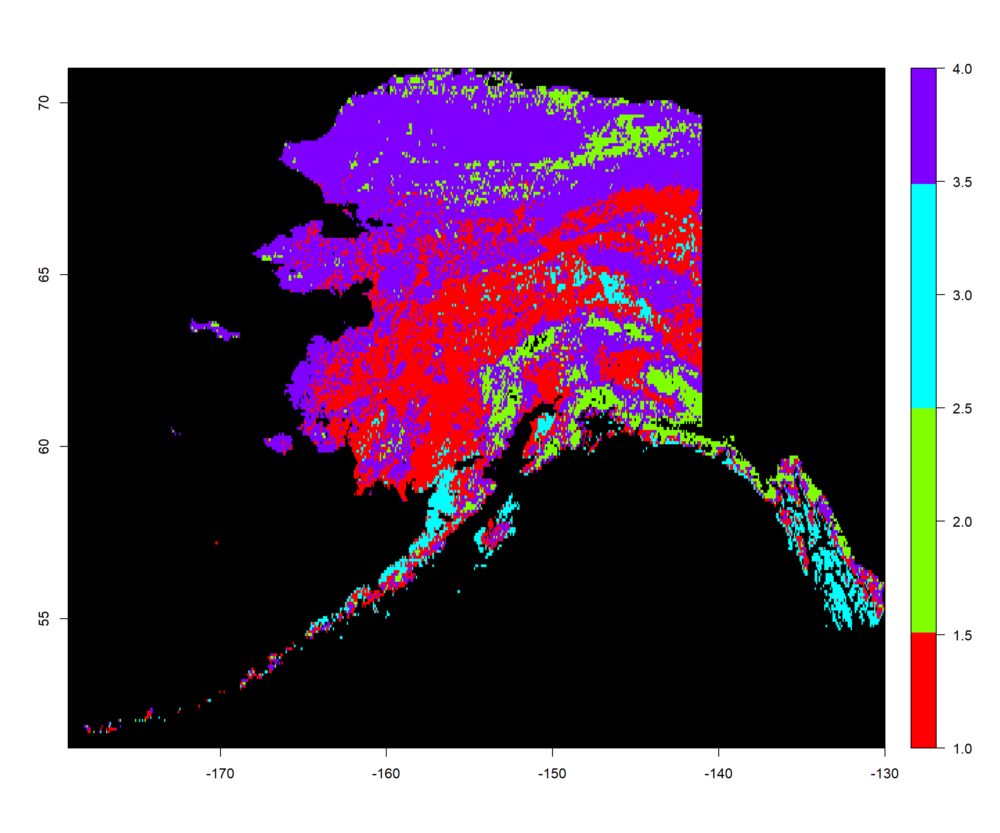
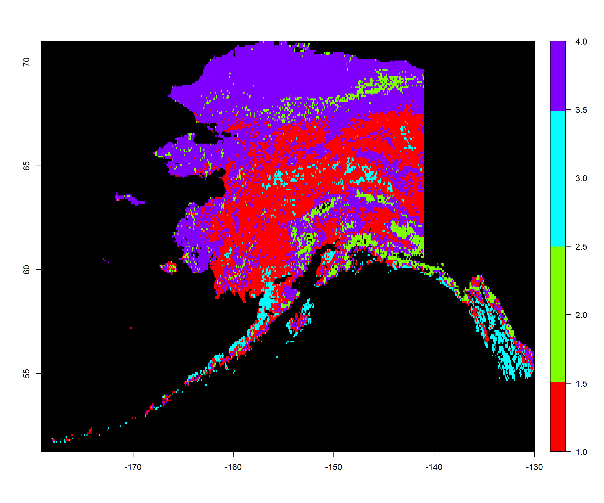
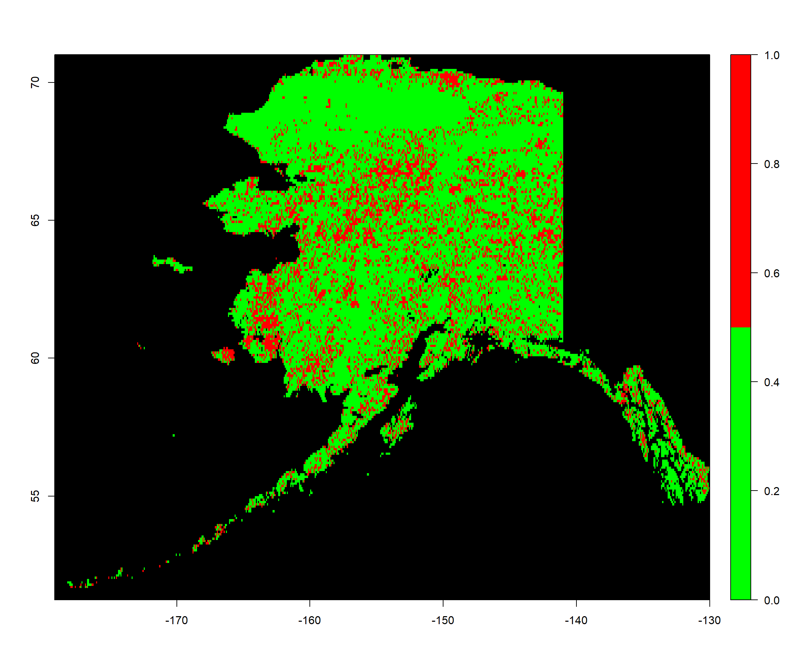

Change Analysis
Preparing The Work
Let’s create our basic structure for this document:
Head
Not much has changed in the head when compared to our last exercise. We merely change the contents and and the edit tag, since the rest stays the same for the entire project.
# ####################################################################### #
# PROJECT: [BFTP] Identifying Biomes And Their Shifts Using Remote Sensing
# CONTENTS: Functionality to identify and analyse changes in spatial cluster distributions
# AUTHOR: Erik Kusch
# EDIT: 19/03/20
# ####################################################################### #
Preamble
I am keeping the same preamble as last time because we will need to index the data and the plot directory in this exercise. Our preamble then looks like this:
rm(list=ls()) # clearing the entire environment
Dir.Base <- getwd() # identifying the current directory
Dir.Data <- paste(Dir.Base, "Data", sep="/") # generating the folder path for data folder
Dir.Plots <- paste(Dir.Base, "Plots", sep="/") # generating the folder path for figures folder
Notice, that we do not call the function dir.create() this time. We don’t need to do so, because we already created the two directories established above in our last exercise. Usually, we would create this entire analysis of your BFTP project in one R code script. In this case, we would only have one preamble which defines and creates directories instead of doing this step for every single sub-part of the analysis. Alas, we want to break this down for you. Therefore, you see this preamble here and will again in the next exercise.
This time, we actually do load packages here as we really only need the raster package. By now, I am assuming you know what we use it for:
library(raster) # the raster package for rasters
Additionally, we reload our .RData workspace from the last exercise to gain back our mclust model objects in particular.
load(file = "Workspace.RData") # load workspace
Coding
Again, all of the important Coding happens after the head and the preamble are written and run in R. Basically, this is the rest of this document once more.
Change Analysis
Loading Data
Firstly, we need the raw NDVI mean and seasonality data for the time frames we want to compare. Let’s deal with that right quick.
1982
Let’s load our 1982 NDVI mean and seasonality data:
Mean1982_ras <- raster(paste(Dir.Data, "1982Mean.nc", sep="/")) # loading means
Season1982_ras <- raster(paste(Dir.Data, "1982Season.nc", sep="/")) # loading seasonalities
All1982_ras <- stack(Mean1982_ras, Season1982_ras) # creating a stack
names(All1982_ras) <- c("Mean", "Seasonality") # assign names to stack layers
Vals1982_mat <- values(All1982_ras) # extract data
rownames(Vals1982_mat) <- 1:dim(Vals1982_mat)[1] # rownames to index raster cell number
Vals1982_mat <- na.omit(Vals1982_mat) # omit all rows which contain at least one NA record
summary(Vals1982_mat) # a summary of the data
## Mean Seasonality
## Min. :0.00 Min. :0.00
## 1st Qu.:0.22 1st Qu.:0.55
## Median :0.33 Median :0.67
## Mean :0.32 Mean :0.64
## 3rd Qu.:0.41 3rd Qu.:0.76
## Max. :0.84 Max. :1.00
2015
In order to assess how biome distributions have changed, we need another time frame to compare our 1982 data to. For this, I have re-run the code from our first BFTP exercise for the year 2015. We now load that data into R:
Mean2015_ras <- raster(paste(Dir.Data, "2015Mean.nc", sep="/")) # loading means
Season2015_ras <- raster(paste(Dir.Data, "2015Season.nc", sep="/")) # loading seasonalities
All2015_ras <- stack(Mean2015_ras, Season2015_ras) # creating a stack
names(All2015_ras) <- c("Mean", "Seasonality") # assign names to stack layers
Vals2015_mat <- values(All2015_ras) # extract data
rownames(Vals2015_mat) <- 1:dim(Vals2015_mat)[1] # rownames to index raster cell number
Vals2015_mat <- na.omit(Vals2015_mat) # omit all rows which contain at least one NA record
summary(Vals2015_mat) # a summary of the data
## Mean Seasonality
## Min. :0.00 Min. :0.00
## 1st Qu.:0.25 1st Qu.:0.56
## Median :0.33 Median :0.67
## Mean :0.34 Mean :0.64
## 3rd Qu.:0.43 3rd Qu.:0.77
## Max. :0.83 Max. :1.00
Notice, that the output of the summary() function is different for both matrices built from raster data values. This is important to ensure that our analysis actually references different time frames.
\newpage
Predictions
Secondly, we want to compare cluster assignments. To do so, we need to use our mclust models to predict cluster assignments for each cell in our target region raster using the NDVI mean and seasonality data that we loaded previously.
1982
Let’s deal with the 1982 data first. mod2 is the mclust model object for 4 clusters from our last exercise. Here, we predict clusters and place them on a raster:
ModPred1982 <- predict.Mclust(mod2, Vals1982_mat) # prediction
Pred1982_ras <- Mean1982_ras # establishing a rediction raster
values(Pred1982_ras) <- NA # set everything to NA
# set values of prediction raster to corresponding classification according to rowname
values(Pred1982_ras)[as.numeric(rownames(Vals1982_mat))] <- as.vector(ModPred1982$classification)
colours <- rainbow(mod2$G) # define 4 colours
plot(Pred1982_ras, # what to plot
col = colours, # colours for groups
colNA = "black", # which colour to assign to NA values
legend.shrink=1, # vertical size of legend
legend.width=2 # horizontal size of legend
)

\newpage
2015
Now, we deal with the 2015 time frame. Notice, that we are using the mod2 mclust model which was established for 1982 in our last exercise. It is important that we use the same model when predicting our classes between time frames to ensure comparability. After all, we want to make sure that cluster 1 is the same in 1982 as 2015. It is debatable whether we should use a cluster model built from just one year of data or even from the same time frame as one of the the time frames which are to be compared. In fact, I would argue that we should establish a mclust model for the mean annual NDVI and mean annual seasonality of NDVI across the entire time for which data is available. For now, we simply use the 1982-reliant model:
ModPred2015 <- predict.Mclust(mod2, Vals2015_mat) # prediction
Pred2015_ras <- Mean2015_ras # establishing a rediction raster
values(Pred2015_ras) <- NA # set everything to NA
# set values of prediction raster to corresponding classification according to rowname
values(Pred2015_ras)[as.numeric(rownames(Vals2015_mat))] <- as.vector(ModPred2015$classification)
colours <- rainbow(mod2$G) # define 4 colours
plot(Pred2015_ras, # what to plot
col = colours, # colours for groups
colNA = "black", # which colour to assign to NA values
legend.shrink=1, # vertical size of legend
legend.width=2 # horizontal size of legend
)

You can already see some cluster assignment changes on Nunivak island.
\newpage
Initial Assesment
Let’s first assess how many raster cells have changed cluster assignment between our two time frames:
# identify how many cell assignments don't match between rasters
Change <- sum(ModPred1982$classification != ModPred2015$classification)
# divide number of mismatches by number of all cells
Change/length(ModPred2015$classification)
## [1] 0.22
As you can see, there is a proportion of 0.22 raster cells which have changed cluster assignment between the two time frames. Now, let’s put this on a map:
PredChange_ras <- Mean2015_ras # establishing a rediction raster
values(PredChange_ras) <- NA # set everything to NA
# set values of prediction raster to corresponding classification according to rowname
values(PredChange_ras)[as.numeric(rownames(Vals2015_mat))] <-
ModPred1982$classification != ModPred2015$classification
colours <- c("green", "red") # define 2 colours
plot(PredChange_ras, col = colours, colNA = "black",
legend.shrink=1, legend.width=2)

I leave it to you to interpret these patterns (there actually is an interpretation to be had here).
\newpage
In-Depth Assesment
I’d argue that a simple understanding whether things have changed won’t be what we want to report. What we want, is to know which cluster took over the cells of which raster. I.e., I’d like to answer the question: “Which clusters take over the regions of other clusters and which ones?”. I hope you’re interested in this, too. Here’s how we can analyse this: For each cluster assignment we:
- Identify the cells corresponding to it in 1982/the past
- Count how many of these cells are classified as the same cluster in 2015/the present
- Repeat the above for all combinations of cluster assignments imaginable
NClusters <- mod2$G # identify the number of clusters
present <- as.vector(Pred2015_ras) # assignments in 2015
past <- as.vector(Pred1982_ras) # assignments in 1982
# this matrix will hold the data, rows will show past state, columns will show present state
changematrix <- matrix(rep(NA, NClusters^2), nrow=NClusters, ncol=NClusters)
changevec <- rep(NA, NClusters) # this vector will fill rows in our matrix
for(k in 1:NClusters){ # loop over clusters in past
changerun <- changevec
changeperc <- changevec
for(m in 1:NClusters){ # loop over clusters in present
presentcells <- which(present==m) # figure out which cells hold value m
pastcells <- which(past==k) # figure out which cells hold value k
# figure out how many of the cell denominators are shared by the two vectors
rate <- length(Reduce(intersect, list(pastcells,presentcells)))
changerun[m] <- rate # save rate to changerun in place m
} # end of present-loop
changematrix[k,] <- changerun # save changerun to k row in matrix
for(n in 1:NClusters){ # turn rates into portions
# divide number of in a cell by total number of cells in its row
changeperc[n] <- changematrix[k,n] / sum(changematrix[k,])
} # end of percentages
changematrix[k,] <- changeperc # save changeperc to row k
} # end of past-loop
changematrix <- changematrix*100 # turn everything into percentages
rownames(changematrix) <- paste0("Past", 1:NClusters)
colnames(changematrix) <- paste0("Present", 1:NClusters)
changematrix # show the matrix
## Present1 Present2 Present3 Present4
## Past1 82.0 0.84 4.459 13
## Past2 3.5 60.35 0.074 36
## Past3 23.8 0.00 76.235 0
## Past4 16.9 3.01 0.029 80
As you can see, there’s quite a bit going on here. Let me explain how to read this. From past (1982) to present (2015), 82.03% of raster cells assigned to cluster 1 in 1982 are assigned to cluster 1 in 2015 as well. 0.84% of raster cells previously assigned to cluster 1 are classified as cluster 2 in 2015. Notice, how all rows sum up to 100% each. Representing the total of assigned raster cells in the 1982 record.
Given the biological counterparts of the clusters, how would you interpret these shifts?